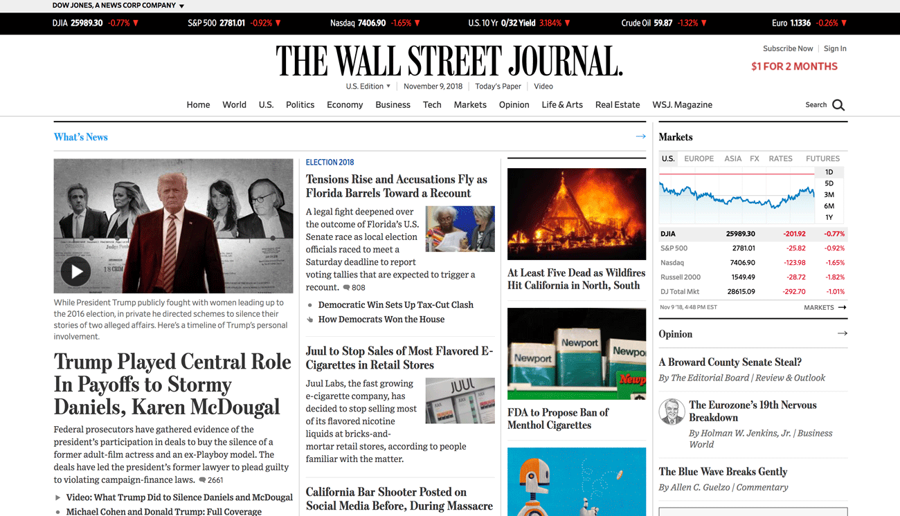
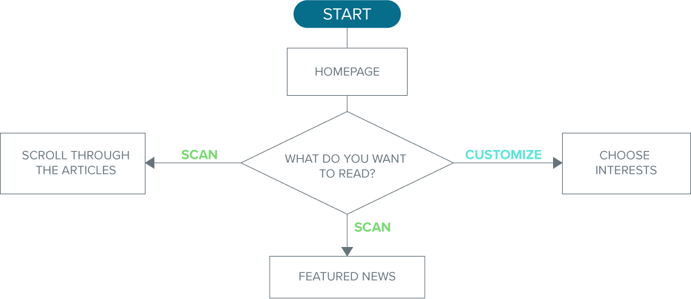
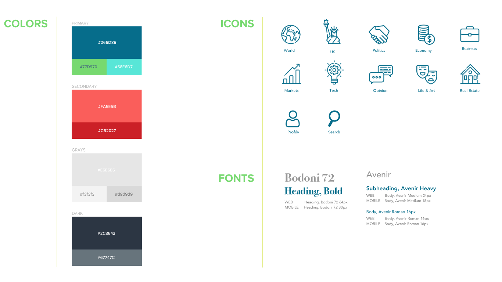
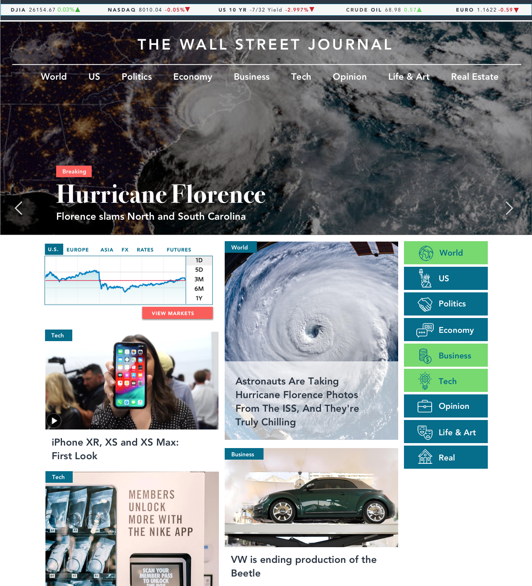
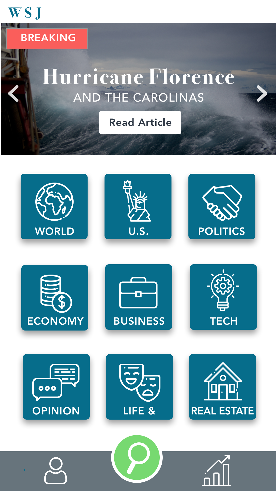

    <!-- Modal 4 -->
    <div class="portfolio-modal modal fade" id="portfolioModal4" tabindex="-1" role="dialog" aria-hidden="true">
            <div class="modal-dialog">
              <div class="modal-content">
                <div class="close-modal" data-dismiss="modal">
                  <div class="lr">
                    <div class="rl"></div>
                  </div>
                </div>
                <div class="container">
                  <div class="row">
                    <div class="col-lg-10 mx-auto">
                      <div class="modal-body">
                        <!-- Project Details Go Here -->
                        <h2 class="text-uppercase"> WALL STREET JOURNAL </h2>
                        <h4 class="item-intro text-muted"> Homepage Redesign </h4><br><br>
                        <p> This is a project of redesigning the homepage of Wall Street Journal web and app that allow readers to customize their landing page, in order to see articles that they are interested conveniently.</p>
                        <div class="row">
                            <div class="col-lg-4">
                            <h6 class="text-wsj"> TEAM </h6>
                            <p> I collaborated
                            <br> with 3 of my colleagues</p>
                        </div>
                        <div class="col-lg-4">
                            <h6 class="text-wsj"> ROLE : DESIGNER </h6>
                            <p> User Flow
                            <br>Style Guide
                            <br>Wireframe
                            <br>Prototype
                            </p>
                        </div>
                        <div class="col-lg-4">
                            <h6 class="text-wsj"> TOOLS </h6>
                            <p>  Sketch
                            <br> Illustrator
                            <br> Photoshop
                              </p> 
                        </div>
                      </div>
                    </div><br> <br>
                        <br><h3> CURRENT HOMEPAGE </h3>
                        <br><br>
                        
                        <br><br><br><hr>
                        <br><br><br>
                        <h3> USER FLOW </h3>
                        <br><br>
                        
                        <br><br><br><hr>
                        <br><br><br>
                        <h3> WIREFRAME </h3>
                        <br><br>
                        
                        <hr><br><br><br>
                        <h3> STYLE GUIDE </h3>
                        <br><br>
                        
                        <br><br><br>
                        <hr><br><br><br>
                        <h3> HIGH FIDELITY PROTOTYPE </h3>
                        <br><br><h5> Desktop </h5><br><br>
                        
                        <br><br><h5> Mobile </h5><br><br>
                        
                        <br><br><br><hr><br><br><br>
                          <h3> FINAL THOUGHTS </h3>
                          <br>
                          <h5>Communicating ideas and feedback</h5>  
                          <p>Communication is key. I believe we were able to successfully work together because we made sure to consistently communicate and bounce ideas off one another. We also took feedback very well and discussed why we wanted designs to look a certain way. This was a great way to learn how to both defend and be open to changing our design decisions.</p>     
                        <h5>Style Guides are a must</h5>  
                        <p>Before diving into creating higher fidelity mockups, our team brainstormed and created a style guide. This enabled us to create consistent designs and components, even when we were individually working on our own mockups and screens.</p>
                          <br><br><br>
                        <button class="btn btn-primary" data-dismiss="modal" type="button">
                          <i class="fas fa-times"></i>
                          Close Project</button>
                      </div>
                    </div>
                  </div>
                </div>
              </div>
            </div>
          </div>
      